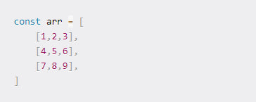

Малькова Екатерина, группа 1102о
Преподаватель: Цветкова Людмила Александровна
Малькова Екатерина, группа 1102о
Преподаватель: Цветкова Людмила Александровна
В JavaScript существует восемь типов данных:
В отличие от первых семи типов данных, тип object представляет собой сложный (комплексный) объект, который может состоять из примитивных данных. Рассмотрим типы данных JavaScript более подробно.
Значения типа number в JavaScript представлены в виде 64-битных чисел двойной точности с плавающей запятой. Это означает, что переменная типа number может содержать любое значение из диапазона, например:

В качестве разделителя целой и дробной части числа используется точка. Для записи чисел в JavaScript можно использовать и другие способы, например:

Тип String представляет строки — последовательности символов. Для записи строк в JavaScript могут использоваться три вида кавычек: двойные, одинарные и косые:
Основное правило записи строк в JavaScript: строка должна содержать один и тот же тип кавычек в начале и в конце. Если внутри самой строки используются кавычки, то мы можем поступить двумя способами:
использовать два типа кавычек, например, так:

или же экранировать внутренние кавычки с использованием символа /:

Косые кавычки используются для применения такого приема, как интерполяция строк — встраивание в строку значений. Например:

Конструкция ${...} означает, что на это место в строке будет вставлено значение переменной, указанной в фигурных скобках. С помощью интерполяции можно встраивать в строки любое количество переменных, например:

Тип Boolean представляет логические значения: true (истина) и false (ложь). Например:

Тип Undefined представляет всего одно специальное значение undefined, которое означает, что значение переменной не определено. Это значение мы можем увидеть, например, когда мы только объявляем переменную и ещё не присвоили ей значение:

Тип Object занимает особое место среди других типов данных. Так, все рассмотренные ранее типы называются также «примитивными», так как могут содержать только какие-то конкретные значения — строки, числа, true/false и т.д. Тип Object определяет комплексный тип данных, который может содержать целые коллекции данных, например:

Здесь мы определили объект, содержащий основную информацию о пользователе. В свою очередь, тип Symbol позволяет создавать уникальные идентификаторы в объектах.
Обычно, значение null присваивается намеренно (в отличие от undefined), чтобы явно указать, что переменная не представляет какого-либо значения:
Этот тип предназначен для работы с числами, выходящими за безопасный диапазон number. Чтобы представить число как BigInt, необходимо добавить к значению суффикс n. Например, перепишем предыдущий пример так, чтобы избавиться от потери точности:
Массив - это набор элементов, хранящихся в смежных ячейках памяти.
Доступ к каждому элементу возможен через его индекс (позицию). Массивы всегда начинаются с индекса 0, поэтому в массиве из 4 элементов мы могли бы получить доступ к 3-му элементу, используя индекс под номером 2.
Свойство length массива определяется как количество элементов, которые он содержит. Если массив содержит 4 элемента, мы можем сказать, что длина массива равна 4.
В некоторых языках программирования пользователь может хранить значения одного и того же типа только в одном массиве, и длина массива должна быть определена в момент его создания и не может быть изменена впоследствии.
В JavaScript это не так, поскольку мы можем хранить значения любого типа в одном и том же массиве, и его длина может быть динамической (она может увеличиваться или уменьшаться настолько, насколько это необходимо).
В массиве может храниться любой тип данных, включая и массивы. Массив, содержащий в себе другие массивы, называется многомерным массивом.
Стеки - это структура данных, которая хранит информацию в виде списка. Они позволяют добавлять и удалять элементы только в соответствии с шаблоном LIFO (последний вход, первый выход). В стеках элементы нельзя добавлять или удалять не по порядку, они всегда должны следовать шаблону LIFO.
Чтобы понять, как это работает, представьте стопку бумаг на вашем столе. Вы можете добавить больше бумаг в стопку, только положив их поверх всех остальных. И вы можете удалить бумагу из стопки, только взяв ту, которая лежит поверх всех остальных. Последняя входит, первая выходит.
Стеки полезны, когда нам нужно убедиться, что элементы следуют шаблону LIFO. Вот несколько примеров использования стека:
Существует несколько способов реализации стека, но, вероятно, самым простым является использование массива с его методами push и pop. Если мы используем только pop и push для добавления и удаления элементов, мы всегда будем следовать шаблону LIFO и, таким образом, оперировать им как стеком.
Очереди работают очень похоже на стеки, но элементы добавляются и удаляются по другому шаблону. Очереди допускают только шаблон FIFO (первый вход, первый выход). В очередях элементы нельзя добавлять или удалять не по порядку, они всегда должны следовать шаблону FIFO.
Чтобы понять это, представьте людей, стоящих в очереди за едой. Логика здесь в том, что если вы встанете в очередь первым, вас обслужат первым. Если вы доберетесь туда первым, то и выйдете первым.
Как и в случае со стеками, существует несколько способов реализации очереди. Но, вероятно, самым простым является использование массива с его методами push и shift .
Если мы используем только push и shift для добавления и удаления элементов, мы всегда будем следовать шаблону FIFO и, таким образом, работать с ним как с очередью.
Метод Math.abs() возвращает абсолютное значение числа.
Метод Math.floor() - округление вниз. Округляет аргумент до ближайшего меньшего целого.
Статический метод Math.random() возвращает псевдослучайное число с плавающей запятой, которое больше или равно нулю и меньше единицы с приблизительно равномерным распределением в этом диапазоне. В дальнейшем это число можно «отмасштабировать», привести к нужному диапазону. Выбор начального числа для алгоритма генерации случайных чисел происходит автоматически (зависит от реализации) и не может быть изменён пользователем.
Метод Math.max() возвращает наибольшее из нуля или более чисел.
Метод Math.min() возвращает наименьшее из нуля или более чисел.
Функция Math.trunc() возвращает целую часть числа путём удаления всех дробных знаков.
Lodash — это JavaScript библиотека, которая упрощает работу с массивами, числами, объектами, строками путём предоставления множества полезных методов.
Благодаря этой библиотеке мы можем не тратить время на реализацию логики и алгоритмов, а просто использовать готовые методы Lodash, которые имеют хорошую производительность, хорошо протестированы и задокументированы.
&& (двой знак амперсанда) - это бинарный оператор, который представляет собой логически «и» и принимает значение true только в том случае, когда оба операнда истинны, в противном случае false.
|| (двойная вертикальная черта) - это бинарный оператор, который представляет собой логическое «или» и принимает значение true в том случае, когда все или одно из значений операндов истинно, в противном случае false.
! (восклицательный знак) - это унарный оператор, который располагается перед операндом и приводит аргумент к логическому true или false, а затем возвращает противоположное значение.
Цикл for повторяет действия, пока не произойдёт какое-либо специальное событие завершения цикла. Оператор for в JavaScript аналогичен оператору for в Java и C.
Цикл do...while повторяется пока заданное условие истинно.
выражения выполняются пока условие истинно. Чтобы использовать несколько выражений, используйте блок-выражение { ... }, чтобы сгруппировать их. Если условие истинно, выражения выполнятся снова. В конце каждого прохода условие проверяется. Если условие ложно, выполнение приостанавливается и управление передаётся выражению после do...while.
Цикл while выполняет выражения пока условие истинно.
Если условие становится ложным, выражения в цикле перестают выполняться и управление переходит к выражению после цикла.
Функции определяются или объявляются с помощью ключевого слова function. Синтаксис функции в JavaScript выглядит так: function nameOfFunction () {// Code to be executed}. Объявление функции начинается с ключевого слова function, за которым следует имя функции. Имена функций составляются по тем же правилам, что и имена переменных: они могут содержать буквы, цифры, знаки подчеркивания и доллара и часто записываются в верблюжьем регистре.
В JavaScript стрелочная функция — это более короткий синтаксис для написания функциональных выражений. Стрелочные функции — это анонимные функции с более коротким синтаксисом, чем у традиционных функциональных выражений, что делает их идеальными для коротких и простых функций. Во многих случаях их можно использовать для замены функциональных выражений. Вот пример: const add = (x, y)=> {return x + y;}; console.log (add (2, 3)); // Output: 5.
Работу с функциями можно разделить на два этапа: создание (объявление) и выполнение (вызов)
ES-модули — модульная система на уровне языка, которая появилась в спецификации ES2015. Далее, когда мы будем говорить о модулях, мы будем иметь в виду именно ES-модули.
В ES-модулях для экспорта используется ключевое слово export, а для импорта — import.